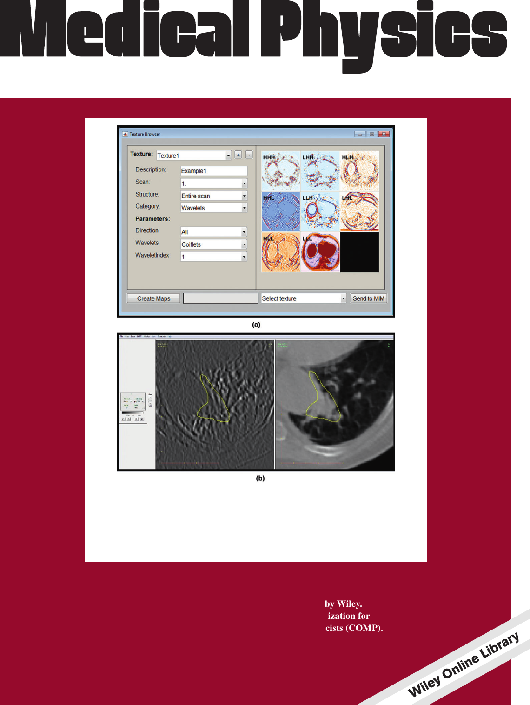

Publications
| 21. | M. Crispin-Ortuzar and E. Sala Precision radiogenomics: fusion biopsies to target tumour habitats in vivo Accepted at British Journal of Cancer |
||
| 20. | M. Gehrung, M. Crispin-Ortuzar, A. G. Berman, M. O'Donovan, R. C. Fitzgerald, F. Markowetz Triage-driven diagnosis of Barrett esophagus for earlydetection of esophageal adenocarcinomausing deep learning Accepted at Nature Medicine |
||
| 19. | L. Beer, P. Martin-Gonzalez, ..., M. Crispin-Ortuzar, H. Addley, and E. Sala Ultrasound-guided targeted biopsies of CT-based radiomic tumour habitats: technical development and initial experience in metastatic ovarian cancer European Radiology (2020) |
||
| 18. | H. Veeraraghavan, H.A. Vargas, A.-J. Sánchez, M. Micco, E. Mema, Y. Lakhman, M. Crispin-Ortuzar, et al. Integrated Multi-Tumor Radio-Genomic Marker of Outcomes in Patients with High Serous Ovarian Carcinoma Cancers 12, 3403 (2020) |
||
| 17. | S. Sanduleanu, A. Jochems, T. Upadhaya, A.J.G. Even, R.T.H. Leijenaar, F.J.W.M. Dankers, ..., M. Crispin-Ortuzar, A. Apte, et al. Non-invasive imaging prediction of tumor hypoxia: A novel developed and externally validated CT and FDG-PET-based radiomic signatures Radiotherapy and Oncology 153, 97 (2020) |
||
| 16. | P. Martin-Gonzalez, M. Crispin-Ortuzar, L. Rundo, M. Delgado-Ortet, M. Reinius, L. Beer, R. Woitek, S. Ursprung, H. Addley, J.D. Brenton, F. Markowetz and E. Sala Integrative radiogenomics for virtual biopsy and treatment monitoring in ovarian cancer Insights into Imaging 11, 94 (2020) |
||
| 15. | M. Crispin-Ortuzar, M. Gehrung, S. Ursprung, A.B. Gill, A.Y. Warren, L. Beer, F.A. Gallagher, T.J. Mitchell, I.A. Mendichovszky, A.N. Priest, G.D. Stewart, E. Sala and F. Markowetz Three-Dimensional Printed Molds for Image-Guided Surgical Biopsies: An Open Source Computational Platform Journal of Clinical Oncology: Clinical Cancer Informatics 4, 736 (2020) |
||
| 14. | L. Rundo, L. Beer, S. Ursprung, P. Martin-Gonzalez, F. Markowetz, J.D. Bernton, M. Crispin-Ortuzar, E. Sala and R. Woitek Tissue-specific and interpretable sub-segmentation of whole tumour burden on CT images by unsupervised fuzzy clustering Computers in Biology and Medicine 120, 103751 (2020) |
||
|  | 13. | A. Apte, A. Iyer, M. Crispin-Ortuzar, R. Pandya, L. van Dijk, E. Spezi, M. Thor, H. Um, H. Veeraraghavan, J.H. Oh, A. Shukla-Dave and J.O. Deasy Extension of CERR for computational radiomics: a comprehensive MATLAB platform for reproducible radiomics research Medical Physics 45, 3713 (2018) |
|
| 12. | M. Crispin-Ortuzar, A. Apte, M. Grkovski, J.H. Oh, N.Y. Lee, H. Schoder, J.L. Humm, J.O. Deasy Predicting hypoxia status using a combination of contrast-enhanced computed tomography and [18F]-Fluorodeoxyglucose positron emission tomography radiomics features Radiotherapy and Oncology 127, 36 (2018) |
||
| 11. | M. Crispin-Ortuzar, J. Jeong, A.N. Fontanella and J.O. Deasy A radiobiological model of radiotherapy response and its correlation with prognostic imaging variables Physics in Medicine and Biology 62, 2658 (2017) |
||
| 10. | M. Crispin-Ortuzar, M. Grkovski, B. Beattie, N.Y. Lee, N. Riaz, J.L. Humm, J. Jeong, A.N. Fontanella and J.O. Deasy Radiobiological Modeling of Tumor Response During Radiotherapy Based On Pre-Treatment Dynamic PET Imaging Data Medical Physics 43, 3797 (2016) |
||
| 9. | M. Crispin-Ortuzar High Jet Multiplicity Physics at the LHC Springer International Publishing, ISBN 978-3-319-43460-5 |
||
| 8. | M. Crispin-Ortuzar and the ATLAS Collaboration Measurement of four-jet differential cross-sections in sqrt(s)=8 TeV proton-proton collisions using the ATLAS experiment Journal of High Energy Physics 12, 105 (2015) |
||
| 7. | M. Crispin Ortuzar, A. Haas, Z. Marshall, M. Ronzani, A. Sfyrla Limits on metastable gluinos from ATLAS SUSY searches at 8 TeV ATL-COM-PHYS-2014-037, Geneva, CERN |
||
| 6. | M. Crispin-Ortuzar and the ATLAS Collaboration Search for new phenomena in final states with large jet multiplicities and missing transverse momentum at sqrt(s)=8 TeV proton-proton collisions using the ATLAS experiment Journal of High Energy Physics 10, 130 (2013) |
||
| 5. | J. Alconada, M. Corradi, M. Crispin Ortuzar, M. T. Dova, P. Francavilla, A. Khanov, F. Monticelli, E. Moyse, C. Pizio, C. Pollard, P. S. Wells Performance assumptions based on full simulation for an upgraded ATLAS detector at a High-Luminosity LHC ATL-COM-PUB-2013-009, Geneva, CERN |
||
| 4. | A. Barr, K. Boone, A. Canepa, M. Crispin-Ortuzar, M. D'Onofrio, C. Young, G. Polesello, G. Redlinger Searches for Supersymmetry at the high luminosity LHC with the ATLAS Detector ATL-COM-PUB-2013-002, Geneva, CERN |
||
| 3. | A. Barr, M. Crispin-Ortuzar, A. Mincer, R. Neves, A. Robichaud Veronneau, A. Sfyrla, A. Tua and C. Young Search for new phenomena using large jet multiplicities and missing transverse momentum with ATLAS in 5.8 ifb of sqrt(s) = 8 TeV proton-proton collisions ATL-COM-PHYS-2012-964, Geneva, CERN |
||
| 2. | K. Cannon, R. Cariou, A. Chapman, M. Crispin-Ortuzar, N. Fotopoulos, M. Frei, C. Hanna, E. Kara, D. Keppel, L. Liao, S. Privitera, A. Searle, L. Singer and A. Weinstein Toward early-warning detection of gravitational waves from compact binary coalescence The Astrophysical Journal 748, 136 (2012) |
||
| 1. | C. Candela Juan, M. Crispin-Ortuzar and M. Aslaninejad Depth-dose distribution of proton beams using inelastic-collision cross sections of liquid water Nuclear Instruments and Methods B 269, 189 (2011) |